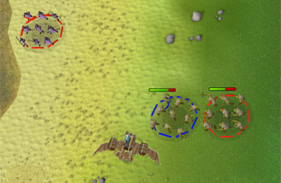
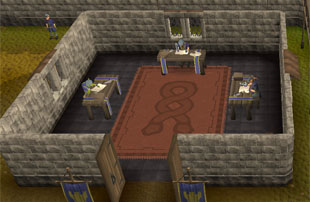
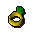
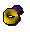
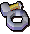

")
Wettrüsten
Einführung | Lage | Voraussetzungen | Schnellstart
Rekrutierung | Vorbereitung | Schlacht! | Spielende
Belohnungen | Einsätze| Entwicklung
Rekrutierung | Vorbereitung | Schlacht! | Spielende
Belohnungen | Einsätze| Entwicklung
Nur RuneScape-Mitglieder können am Wettrüsten teilnehmen. Bitte werdet Mitglied, damit ihr auf dieses Feature zugreifen könnt.
Das Wettrüsten ist ein 'sichereres' Minispiel. Da eure Truppen für euch kämpfen, geratet ihr nicht in Lebensgefahr.
Einführung

Lage

Es gibt auch diverse Teleporte: Sowohl der Wettrüsten-Teleport aus dem normalen Zauberbuch als auch der Duell-Ring oder die Bäume des Seins bringen euch an die Tore der Kommandozentrale des Wettrüstens.
Voraussetzungen
Um Wettrüsten spielen zu können, sind keine Mindestvoraussetzungen erforderlich. Eure Leistung hängt nicht von euren Fertigkeitsstufen, sondern von eurem strategischen Geschick ab.
Achtung: Um Söldner und Spezialeinheiten kaufen zu können, benötigt ihr Versorgungsgüter (Fähnrich Malle spendiert euch die ersten zehn Truppen und fünf Spezialeinheiten). Unter Rekrutierung erfahrt ihr mehr.
Schnellstart
Dieser Abschnitt richtet sich an alle, die die Einführung im Spiel noch nicht abgeschlossen haben.
![[Bild]](../../img/main/kbase/minigames/mob/mob_mal.gif) Um mit dem Wettrüsten loszulegen, müsst ihr mit Fähnrich Malle sprechen, der am Südtor der Kommandozentrale besorgt auf- und abmarschiert. Er bringt euch alles bei, was ein Kommandant wissen muss - von der Truppenrekrutierung bis zu den Belohnungen - und bietet auch zusätzliche, freiwillige Lektionen an, die ihr abrufen könnt, wann ihr wollt.
Um mit dem Wettrüsten loszulegen, müsst ihr mit Fähnrich Malle sprechen, der am Südtor der Kommandozentrale besorgt auf- und abmarschiert. Er bringt euch alles bei, was ein Kommandant wissen muss - von der Truppenrekrutierung bis zu den Belohnungen - und bietet auch zusätzliche, freiwillige Lektionen an, die ihr abrufen könnt, wann ihr wollt. Während eures Schnelldurchlaufs gibt euch Malle genügend Kapital für 10 Söldnertruppen. Viel mehr braucht man nicht, um Kriege zu führen! Im Rekrutierungszimmer könnt ihr das Volk und die Klasse eurer Truppen auswählen. Sprecht einfach mit den verschiedenen Anwerbern!
Wenn ihr Verträge für zehn Truppen im Inventar habt, könnt ihr euch ins Scharmützel stürzen. Ihr dürft nur getragene Gegenstände, Truppenverträge und Spezialeinheiten im Gepäck haben, also legt all eure anderen Gegenstände in die Bank (im Nordwesten des Lagers gibt es eine). Um eine Schlacht zu beginnen, betretet den Besprechungsraum an der Südmauer des Lagers.
Rekrutierung
Die folgenden Informationen richten sich an alle, die noch mehr über das Wettrüsten wissen wollen. Ihr müsst vor Beginn des Spiels eine Einführung absolvieren, in der ihr ungefähr das Gleiche erfahrt.
Ein Befehlshaber ist nur so gut wie das Heer, das er befehligt, also solltet ihr euch zuerst ein paar treue Truppen rekrutieren. Ihr müsst euch im Rekrutierungszimmer im Südwesten des Lagers zehn Söldnertruppen besorgen.

Nachdem ihr die Einführung abgeschlossen habt, könnt ihr über das Fenster 'Truppenrekrutierung' besiegte Truppen aufstocken, zwischen den Völkern wechseln, leichte gegen schwere Infanterie tauschen (und umgekehrt). Die aktuellen Werte eurer Truppen seht ihr oben und auf der rechten Seite des Truppenrekrutierungsfensters.
Nachdem ihr die Truppen, ihre Völker und ihre Klassen ausgewählt habt, müsst ihr für die Verträge bezahlen. Mit Goldmünzen kommt ihr hier jedoch nicht weit. Ihr müsst euch erst ein Kapital im Wettrüsten anlegen.
Um euer Kapital zu erhöhen, macht einen Rechtsklick auf Fähnrich Malle und wählt 'Investieren' aus. Ihr landet dann im Kapital-Handelsfenster, wo ihr handelbare Gegenstände (sogenannte Versorgungsgüter) gegen Kapital eintauschen könnt, von dem ihr wiederum Truppen kaufen könnt.
Eine komplette Liste aller Handelsgüter seht ihr, wenn ihr Fähnrich Malle rechtsklickt und 'Handelswaren' auswählt. Es gibt viele verschiedene Güter, die ihr eintauschen könnt, die sich grob in folgende Kategorien einteilen lassen:
- Rüstzeug
- Pfeile und andere Munition
- Getränke und gekochtes Essen
- Bausätze
- Kräuter
- Jagdbeute und Felle
- Schmuck
- Tränke
- Runen
- Beschwörungsbeutel und Zauberrollen
- Teleport-Zauberfoki
- Waffen
Wer sich im Kampf einen Überraschungsvorteil verschaffen will, sollte sich ein paar Spezialeinheiten zulegen.
Spezialeinheiten
Spezialeinheiten sind einmalige Ereignisse, die euch im Kampf einen Vorteil verschaffen. Ebenso wie Truppenverträge müssen auch Spezialeinheiten von dem Kapital bezahlt werden, das ihr von Fähnrich Malle für eure Versorgungsgüter bekommen habt. 
- Kanone - Kann nach Norden, Süden, Osten oder Westen gerichtet werden und fügt dann allen Truppen in dieser Himmelsrichtung Schaden zu.
- Gleiter - Stürzt sich gezielt auf eine bestimmte Truppe.
- Chilla-Bombe - Dieses Fellknäuel richtet bei allen Truppen im Explosionsradius Schaden an.
- Ablenkung - Macht die Truppen in der näheren Umgebung kurzzeitig handlungsunfähig.
- Barrikade - Eine lange Mauer, die als Verteidigungswall oder zur Verlangsamung des Gegners benutzt werden kann.
Im Gegensatz zu Truppen könnt ihr eine Spezialeinheit nur ein einziges Mal einsetzen.
Vorbereitung

Im Besprechungsraum müsst ihr zuerst einen Einsatz auswählen. Ihr könnt vier verschiedene Einsätze mit unterschiedlichen Regeln und Gewinnkonditionen freischalten. Wenn ihr zum ersten Mal 'Wettrüsten' spielt, könnt ihr nur 'Angriff' spielen, einen Einsatz, bei dem es schlicht und ergreifend darum geht, alle Gegner zu vernichten.
Hier könnt ihr auch sehen, wie viele andere Spieler bereits auf den Beginn der einzelnen Einsätze warten. Wenn sich nicht mindestens 20 Spieler im Besprechungsraum befinden, kann das Spiel nicht starten. In jeder Runde treten erst einmal vier Gegner gegeneinander an (außer bei 'Angriff' - da hier nur zwei Spieler gegeneinander antreten). Das kann sich auf bis zu zwei reduzieren, falls die anderen während des Gefechts desertieren.
Nach der Auswahl des Einsatzes müsst ihr im nächsten Fenster die dazugehörigen Optionen einstellen. Hier seht ihr Informationen über den Einsatz und könnt die Truppenformationen festlegen. Es gibt neun Formationen, von denen manche nur höherrangigen Kommandanten zur Verfügung stehen. Eure Formation könnt ihr jedesmal neu auswählen, um sie auf eure Tagesform, den Einsatz oder den Kampfstil abzustimmen. Wenn ihr gewählt habt, klickt auf 'Vor'.
Als Nächstes werdet ihr gefragt, ob ihr in den Einsatz investieren wollt. Die Belohnungen hängen davon ab, wie viel ihr eingesetzt habt (aber natürlich auch von euren Leistungen!). Wenn ihr beispielsweise 10.000 Gold einsetzt, basiert eure Belohnung auf diesem Wert und auf euren Erfolgen im Kampf. Wenn ihr so weit seid, klickt auf 'Spielen'!
Besprechungsraum
![[Bild]](../../img/main/kbase/minigames/mob/briefpane1b.gif) Ihr werdet dann in den Warteraum gebracht. Während ihr im Warteraum seid, werft einen Blick auf die Informationen in der oberen rechten Ecke des Spielfensters. Hier seht ihr den Einsatz, die Zeit bis zum nächsten Spiel und die Anzahl der wartenden Spieler (es müssen mindestens 20 Spieler im Besprechungsraum sein, damit das Spiel beginnt).
Ihr werdet dann in den Warteraum gebracht. Während ihr im Warteraum seid, werft einen Blick auf die Informationen in der oberen rechten Ecke des Spielfensters. Hier seht ihr den Einsatz, die Zeit bis zum nächsten Spiel und die Anzahl der wartenden Spieler (es müssen mindestens 20 Spieler im Besprechungsraum sein, damit das Spiel beginnt). Die Gegner werden nach dem Zufallsprinzip ausgewählt. Wenn ihr in einer Runde nicht ausgewählt werdet, steigt eure Chance, fürs nächste Spiel eingeteilt zu werden.
Schlacht!
Am Anfang des Spiels seht ihr eure Truppen vor euch, die mit farbigen Kreisen gekennzeichnet sind. Jetzt könnt ihr anfangen, Befehle zu erteilen und die ersten vorsichtigen Schritte in Richtung Weltherrschaft unternehmen.
In der oberen rechten Ecke eures Spielfensters seht ihr eine Übersicht über die Anzahl der Gegner, die verbleibende Zeit, die Stärke eurer Armee, die Farbe eurer Truppen und die Anzahl der von euch besiegten Gegner. Euer Seitenfenster sieht während des Wettrüstens etwas anders aus als gewohnt. Ihr findet dort nun die folgenden Fenster:
![[Bild]](../../img/main/kbase/minigames/mob/camera1.gif)
Kamera
Über dieses Menü könnt ihr eure Kamera steuern, den Zoom verändern, eine Karte der Insel ansehen, euren Blickwinkel zurücksetzen oder schnell und bequem zu einer eurer Truppen springen.Über die Pfeiltasten könnt ihr die Kamera bewegen. 'Strg' und die Pfeiltasten rotieren den Blickwinkel oder schwenken die Kamera hoch und runter. Wenn ihr die Hochstelltaste mit den Pfeiltasten benutzt, aktiviert ihr den Zoom.
In der linken oberen Ecke eures Hauptfensters befindet sich ebenfalls eine Kamerasteuerung. Ein Klick auf das Kamera-Symbol setzt die Kamera zurück auf ihre Startposition.
![[Bild]](../../img/main/kbase/minigames/mob/squads1.gif)
Truppenkommandos
Wenn ihr eine Truppe ausgewählt habt, öffnet sich in eurem Seitenfenster automatisch das Menü 'Truppenkommandos'. Der Pfeil zeigt euch an, welche Truppe gerade aktiv ist.Die Truppenkommandos hängen von der Art des Einsatzes ab. Bei einem 'Angriff' sind die Kommandos sehr einfach. Um eure Truppe zu bewegen könnt ihr entweder die Schaltfläche 'Marschieren' (die mit den Fußstapfen) betätigen und dann auf das Gebiet klicken, zu dem ihr euch hinbewegen wollt, oder eine Truppe auswählen und auf den gewünschten Ort klicken. Wenn ihr einen Gegner attackieren wollt, klickt auf 'Angreifen' und wählt dann die gegnerische Truppe aus oder linksklickt auf den Feind. Ihr könnt die feindlichen Truppen auch rechtsklicken und dann die Option 'Truppe angreifen' auswählen.
Über 'Erkunden' schickt ihr eure Truppen auf Schatzsuche. Die Truppe sucht so lange weiter, bis ihr ihr den nächsten Befehl gebt. Wenn ihr Glück habt, findet ihr auf dem blutigen Schlachtfeld irgendwo etwas Wertvolles versteckt.
![[Bild]](../../img/main/kbase/minigames/mob/special1.gif)
Spezialeinheiten
Wenn ihr Spezialeinheiten (Kanonen, Gleiter, Chillas, Ablenkungen oder Barrikaden) habt, könnt ihr sie ebenfalls über euer Seitenfenster kontrollieren. Klickt einfach auf das Symbol der Einheit, die ihr ins Manöver schicken wollt und dann auf das gewünschte Einsatzgebiet.Kanonen und Barrikaden müsst ihr in eine bestimmte Richtung drehen, bevor ihr sie auf dem Schlachtfeld positioniert. Mit dem Gleiter zielt ihr auf eine Truppe, nicht auf ein Stück Land.
![[Bild]](../../img/main/kbase/minigames/mob/mysquads1.gif)
Meine Truppen
Während der Einführung könnt ihr dieses Fenster nicht öffnen, es steht euch aber später zur Verfügung. Hier seht ihr den Status sowie die Art und Klasse eurer Truppen. Außerdem könnt ihr auf das Symbol mit der Hand klicken, um zu der betreffenden Truppe zu springen und die Truppenkommandos einzusehen. Über die Schaltfläche 'Nächste Truppe' könnt ihr durch alle aktiven Truppen navigieren.![[Bild]](../../img/main/kbase/minigames/mob/forfeit1.gif)
Aufgeben
Rechts neben 'Meine Truppen' ist das Fenster 'Aufgeben'. Hier könnt ihr klicken, um zu desertieren. Dadurch verliert ihr allerdings eure Truppen, Spezialeinheiten und das Kapital, das ihr in den Einsatz investiert hattet. Belohnungs- und Rangpunkte erhaltet ihr in diesem Fall auch nicht.
Spielende
Eine Runde Wettrüsten dauert so lange, bis nur noch einer übrig bleibt oder das Ziel des Einsatzes erfüllt ist. Im Abschnitt Einsätze erfahrt ihr mehr über Ziele und Sonderkommandos. Wenn ihr das Spiel vor dem Ende verlasst, brennen eure Truppen durch und ihr müsst im Rekrutierungszimmer neue kaufen.
Besiegte Truppen können aufgestockt werden, was billiger ist als neue anzuheuern. Besiegte Truppen werden in eurem Inventar mit einem roten X gekennzeichnet. Wenn ihr bis zum Ende kämpft, könnt ihr eure überlebenden Truppen im nächsten Einsatz wieder aufs Schlachtfeld schicken. Die Verträge für diese Truppen tragen kein rotes X.
Wer bis zum Ende der Schlacht durchgehalten hat, wird reich belohnt - egal, ob er gewonnen oder verloren hat. Die Höhe der Belohnung hängt von eurer Leistung und dem Kapital ab, das ihr in den Einsatz investiert habt.
Belohnungen
Ihr erhaltet Belohnungs- und Rangpunkte. Die Menge der Punkte hängt davon ab, wie viel Kapital ihr in die Schlacht investiert habt, und wie erfolgreich ihr gekämpft habt. Die Belohnungspunkte könnt ihr ausgeben oder sparen. Sie werden nicht gelöscht, wenn ihr das Lager verlasst.
Um eure Belohnungspunkte einzulösen, solltet ihr dem Offiziersturm im Nordwesten des Lagers einen Besuch abstatten. Anfangs könnt ihr nur den Keller betreten, aber je weiter euer Rang ansteigt, desto höher kommt ihr hinauf und desto besser werden die Belohnungen. Die Rangpunkte können nicht eingetauscht werden. Ein hoher Rang ist aber von Vorteil, da ihr euch dadurch weitere Formationen und Einsätze freischalten könnt.
Eure sauer verdienten Belohnungspunkte könnt ihr für die folgenden Dinge ausgeben:
 |
 |
 |
Kriegsbeute: Darunter versteht man verschiedene Materialien, Gold und Gegenstände, die eure Truppen bei ihren Plünderungen aufgegabelt haben. Die Kriegsbeute wird wertvoller, je höher ihr im Offiziersturm aufsteigt. | |||
 |
 |
 |
Besondere Gegenstände: Es gibt auch Belohnungen, mit denen ihr eure Abenteuerreisen und euer Fertigkeitstraining vereinfachen könnt: Spürgeräte, mit denen ihr euch zu Rohstoffquellen eurer Wahl teleportieren könnt - von Bäumen bis zu Bergbaugebieten; Abenteuertruhen, in denen sich wichtige Hilfsmittel wie Seile, Meißel, Lampen und Zunderbüchsen auf nur einem Inventarfeld aufbewahren lassen. Natürlich dürfen auch dem Dienstgrad entsprechende Uniformen nicht fehlen, damit ihr mit euren Erfolgen im Wettrüsten angeben könnt. | |||
 |
 |
 |
Mit einem Bonus injizierte Ringe: Gewisse Ringe können mit einem Kampfbonus versehen werden. Alle Ringe und ihre Boni seht ihr in der unten stehenden Tabelle. |
| Gegenstand | |||||||||||||||||||
| Angriffsboni | Verteidigungsboni | Sonstiges | |||||||||||||||||
![[Bild: Stechen]](../../img/main/kbase/table_text/stab1.gif "Stechen") |
![[Bild: Schlitzen]](../../img/main/kbase/table_text/slash1.gif "Schlitzen") |
![[Bild: Schmettern]](../../img/main/kbase/table_text/crush1.gif "Schmettern") |
![[image: Magie]](../../img/main/kbase/table_text/magic1.gif "Magie") |
![[Bild: Fernkampf]](../../img/main/kbase/table_text/range1.gif "Fernkampf") |
|
|
|
|
|
![[Bild: Beschwörung]](../../img/main/kbase/table_text/summoning1.gif "Beschwörung") |
![[Bild: Stärke]](../../img/main/kbase/table_text/strength1.gif "Stärke") |
![[Bild: Gebet]](../../img/main/kbase/table_text/prayer1.gif "Gebet") |
|||||||
Gold-Ring |
+ 0 | + 0 | + 0 | + 0 | + 0 | + 0 | + 1 | + 0 | + 1 | + 1 | + 0 | + 0 | + 0 | ||||||
|  Smaragd-Ring |
+ 0 | + 0 | + 0 | + 0 | + 0 | + 3 | + 2 | + 2 | + 2 | + 2 | + 0 | + 0 | + 0 | ||||||
![[Bild]](../../img/main/kbase/items/rings/sapring.gif) Saphir-Ring |
+ 0 | + 0 | + 0 | + 0 | + 0 | + 1 | + 1 | + 2 | + 1 | + 1 | + 0 | + 0 | + 0 | ||||||
![[Bild]](../../img/main/kbase/items/rings/rubyring.gif) Rubin-Ring |
+ 3 | + 3 | - 4 | + 3 | + 3 | + 0 | + 0 | + 0 | + 0 | + 0 | + 0 | + 0 | + 0 | ||||||
![[Bild]](../../img/main/kbase/items/rings/diaring.gif) Diamant-Ring |
+ 5 | + 4 | + 4 | + 4 | + 4 | + 0 | + 0 | + 0 | + 0 | + 0 | + 0 | + 0 | + 0 | ||||||
Mond-Ring |
+ 0 | + 0 | + 0 | + 5 | + 0 | + 0 | + 0 | + 0 | + 5 | + 0 | + 0 | + 0 | + 0 | ||||||
![[Bild]](../../img/main/kbase/items/rings/charos_ring.gif) Ring des Charos |
+ 0 | + 0 | + 0 | + 0 | + 0 | + 4 | + 4 | + 4 | + 4 | + 4 | + 0 | + 0 | + 0 | ||||||
|  Drachenstein-Ring |
+ 5 | + 5 | + 5 | + 5 | + 5 | + 5 | + 5 | + 5 | + 5 | + 5 | + 0 | + 0 | + 0 | ||||||
![[Bild]](../../img/main/kbase/items/rings/onyxring.gif) Onyx-Ring |
+ 6 | + 6 | + 6 | + 6 | + 6 | + 6 | + 6 | + 6 | + 6 | + 6 | + 0 | + 0 | + 0 | ||||||
Ring des Bogenschützen |
+ 0 | + 0 | + 0 | + 0 | + 8 | + 0 | + 0 | + 0 | + 0 | + 8 | + 0 | + 0 | + 0 | ||||||
![[Bild]](../../img/main/kbase/items/rings/seer_ring.gif) Ring des Sehers |
+ 0 | + 0 | + 0 | + 8 | + 0 | + 0 | + 0 | + 0 | + 8 | + 0 | + 0 | + 0 | + 0 | ||||||
![[Bild]](../../img/main/kbase/items/rings/warrior_ring.gif) Ring des Kriegers |
+ 0 | + 8 | + 0 | + 0 | + 0 | + 0 | + 8 | + 0 | + 0 | + 0 | + 0 | + 0 | + 0 | ||||||
|  Blutrausch-Ring |
+ 0 | + 0 | + 0 | + 0 | + 0 | + 0 | + 0 | + 8 | + 0 | + 0 | + 0 | + 8 | + 0 | ||||||
Einsätze
Belagerung - Hier gewinnt, wer zuerst seine Gegner besiegt oder die Burg in der Mitte der Karte stürmt. Um die Burg einzunehmen, müsst ihr die Mauern mit euren Truppen oder einem Katapult angreifen. Klickt auf das Kommando 'Mauer/Katapult angreifen' und dann auf die störende Mauer (oder das Katapult) oder macht einen Linksklick darauf. Um ein Katapult zu bauen, müsst ihr mit dem Kommando 'Holen' die Räder, das Holz, die Seile und die Wurfarme aus den Schiffswrack an der Küste aufsammeln. Ihr könnt auch einfach einen Linksklick auf das Wrack machen. Habt ihr alle Teile beisammen, wird automatisch ein Katapult gebaut. Wenn ihr dann noch vier Steine von den Steinhaufen in der Umgebung holt, beginnt das Katapult automatisch, auf die Burg zu feuern.
Schatzsuche - Dieser Einsatz spielt auf einer von einem Drachen bewohnten Vulkaninsel. Ihr müsst 100.000 Goldmünzen sammeln oder alle Gegner bezwingen, um zu gewinnen. Den Befehl könnt ihr entweder über das Kommando 'Gold suchen' erteilen oder indem ihr auf die Höhle linksklickt. Ihr benötigt mindestens zwei Truppen: eine, die in der Höhle nach Gold sucht, und eine, die das Gold von der Höhle zu eurem Schiff schleppt. Ihr könnt eure Gegner auch überwältigen und ausrauben. Truppen, die auf Goldsuche sind, sind leichter verletzbar.
Rettung - Bei diesem Einsatz gewinnt der, der als Erstes 28 TzHaar aus den Magmaspalten rettet. Dabei kommt das Truppenkommando 'Retten' zum Einsatz. Klickt auf das Kommando und dann auf einen der verzweifelten TzHaar oder linksklickt direkt auf einen TzHaar. Mit dem Kommando 'Stehlen' könnt ihr die TzHaar eurer Gegner entführen. Klickt einfach auf die TzHaar, die am gegnerischen Kommandozelt und auf der Landungsbrücke am Rand des Spielfelds stehen.
Entwicklerteam
Entwicklung: Tim C, Marion C
Grafik: Kavi M, Mark C, Daniel J, Matthew M, Wayne M, Alec V, Giuseppe G, Samantha H, Paul B, Lluis P, Wing C
Qualitätssicherung: Thomas H, Vicki M, Reece W, Liam H
Audio: Adam B, Ian T, Iain H, Grace D

Weitere Artikel in Minispiele
|
|
|
Weiterführende Informationen Wenn euch dieser Artikel nicht weitergeholfen hat, könnt ihr in den folgenden Kapiteln der RuneScape-Webseite mehr Informationen finden:
|
|